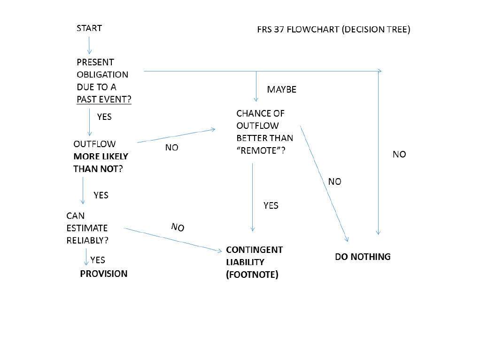

Be warned that some numbers will change every time you reload the page. This page uses MathML which may not display properly in some browsers. Try Firefox if math does not render properly in your browser.
This reading is based on the prescriptive guidance in Singapore FRS(I) 1-37 Provisions, contingent liabilities and contingent assets
After studying this reading, you should be able to:
A provision is an uncertain liability.
It is uncertain in terms of the timing and/or amount of the future outflow of resources that it entails.
Tan Co faces a lawsuit from an aggrieved customer. Tan Co will probably lose this lawsuit and face some damages, according to its legal expert. The company has recorded a liability named "provision for damages from lawsuit" in the amount of $100,000, to reflect the expected damages arising from the lawsuit.
A contingent liability is a potential liability that does not satisfy the criteria to be recorded on the balance-sheet as a provision. For example, the amount of loss may not be reliably estimable; or the chances of any loss may be less than 50%.
A contingent liability is required to be disclosed in the notes, and only in the notes. It should not be recorded as a liability on the balance-sheet.
Cheong Co faces a lawsuit from a disgruntled ex-employee. The chances of losing the lawsuit are significant, but more likely than not, the company will not lose and will not face any damages.
In this situation, the company discloses the lawsuit in the notes only, for example: "the company faces a lawsuit from a disgruntled ex-employee. While there is some chance of facing damages, the company expects this lawsuit to be dismissed."
A contingent asset is an uncertain potential asset. If the chances of realizing any benefit from the uncertain asset are greater than 50%, (probable), then the asset is disclosed in the notes only.
It should not be recorded in the balance sheet unless the chances of realizing any benefit are close to 100% (virtually certain).
Yong Co has sued a supplier for damages arising from a faulty part. The lawyer for Yong Co is of the opinion that Yong Co will win the lawsuit and will most likely be awarded $100,000 in damages.
In this situation, the company discloses the potential award in the notes only, for example: "the company has lodged a lawsuit against a supplier. We anticipate that the company will win the lawsuit and will potentially be awarded damages in the amount of around $100,000 (not reflected in the financial statements)".
A liability is a present obligation arising from a past event.
The obligation is legal or constructive.
Kwok Co has a current policy for their customer service hotline that if a service representative does not respond within 30 minutes, the caller will receive a $5 voucher. Does this lead to a present obligation based on a past event?
Click here to toggle viewing the solution.A legally binding obligation is one where the counterparty can enforce its claim in a court of law.
Chng Co has purchased inventory from a supplier and has an outstanding trade payable of $100. This payable represents a legal obligation. If Chng Co fails to pay the supplier, Chng Co will be in breach of contract, violating contract law; and the aggrieved supplier can seek legal remedies against Chng Co.
A constructive obligation is one where the company has made an announcement or taken some actions that have created (constructed) a reasonable expectation that it will fulfil some commitment, even where it is not legally required to fulfil that commitment. In this situation, the commitment is a constructive obligation.
An oil company sets up an oil rig. It is not required by law to clean up the seabed at the end of the oil rig life. But, the company website has a policy statement that it is the company policy to always clean up the seabed when decommissioning an oil rig. Furthermore, the company has a history of having done so with all its oil rigs in the past. By its actions and its public announcement, the company has constructively established a commitment to clean up the seabed for this oil rig. A constructive obligation exists.
In order to establish whether an obligation arises from a past event, we test if the company can avoid meeting that obligation by taking some future action (other than settling the liability). If they can do so, then the obligation depends on their not taking that future action and not on anything that happened in the past. So there is no past obligating event and the obligation does not lead to a liability.
An airline owns an aircraft. The government has a mandatory requirement that the aircraft owner must perform a safety overhaul every three years. The next mandatory overhaul is due next year. Does the airline have a present obligation arising from a past event?
Click here to toggle viewing the solution.In order to recognize a provision, all three of the criteria below should be satisfied:
Lynn Co faces a lawsuit from a customer, who claims that they were sold a dud product by Lynn. According to the lawyer for Lynn Co, there is a probability of percent that Lynn Co will lose the case and be forced to pay damages. The customer is demanding damages in the amount of $. But in the expert opinion of the company lawyer, the damages if any would be around $, Is this a provision?
Click here to toggle viewing the solution.These criteria are broader than those to recognize a provision. For example, if the probability of a loss is less than 50 percent (but significantly greater than 0), then we can recognize a contingent liability but not a provision. For another example, if the probability of a loss is greater than 50 percent but the amount of the loss cannot be estimated, then we cannot recognize a provision, but we should still disclose a contingent liability in the notes.

A company sells goods under a two-year warranty. Based on past history and engineering guidance, the company has reliable standards on the proportion of defective goods that are likely to lead to warranty repairs. The expected cost of each warranty repair is also a well-established standard cost based on engineering guidance. Is this a provision or a contingent liability?
Click here to toggle viewing the solution.A steel manufacturing company has a blast furnace with a lining that needs replacement every three years under engineering standards. Should the company record a provision for the future cost of replacing the lining? Should they record a contingent liability?
Click here to toggle viewing the solution.An airline owns an aircraft. The government has a mandatory requirement that the aircraft owner must perform a safety overhaul every three years. The next mandatory overhaul is due next year. Should the airline record a provsion for the forthcoming overhaul? Should they record a contingent liability?
Click here to toggle viewing the solution.Chua Co faces a lawsuit from a supplier who is claiming damages due to alleged breach of contract in a past purchase agreement with the company. According to the lawyer for Chua Co, there is a probability of percent that Chua Co will lose the case and be forced to pay damages. In the expert opinion of the company lawyer, the damages if any would be around $, Is this a provision? Is this a contingent liability?
Click here to toggle viewing the solution.Lam Co faces a lawsuit from a disgruntled ex-employee. The ex-employee John belongs to a new religion that imposes a religious requirement of taking a nap from 3pm to 4pm every day.
John alleges that, while he was employed with Lam Co, the company ruthlessly forced him to stay awake and work during this timeslot, thereby violating his religious principles and causing him mental anguish. John is claiming damages in the amount of $1 million.
The lawyer for Lam Co advises that this is a frivolous lawsuit with virtually no chance of the company losing or being forced to pay any damages.
Should Lam Co record a provision for the damages from the lawsuit? Should they disclose a contingent liability?
Click here to toggle viewing the solution.If a provision arises from a collection of similar events, we can estimate the future loss as the average or expected future loss from the events. For example, for a warranty provision arising from sales of several units of a product, we can assess the amount of the future loss by taking the expected number of units that will lead to warranty claims (say x units) times the average cost per warranty claim (say y dollars). Both parameters x and y could be estimated based on past history and/or engineering standards established from quality control.
A company has a one-year embedded warranty on sales of their product. Based on past history, the company assesses that the proportion of sold units that would require light repairs during the warranty period is percent; while the proportion of sold units that would require major repairs during the warranty period is permille (per thousand).
The company assesses that the average cost of each light repair is $, while the average cost of each major repair is $.
In 2024, the company sold units that are still under warranty at the year-end (31/12/2024).
What is the amount of the warranty provision at 31/12/2024?
Click here to toggle viewing the solution.When the provision represents a single unique event, like say losing a lawsuit, the amount of the provision is based on the most likely outcome rather than an expected value calculation. This could be provided by an expert opinion. We should consider whether other less likely outcomes are mostly lower or higher than the most likely outcome, and adjust our estimated amount downwards or upwards respectively.
A company has a provision for repair work due to damages to a plant built for a customer. The company assesses that the cost of rectifying the damage is most likely 1,000. This estimate assumes that the repair work will proceed smoothly according to a standard repair plan. But there is a significant chance that things won't go smoothly and additional troubleshooting and repair work will be needed. In this case, the company should assess the amount of the provision as being some amount higher than 1,000.
Srini Co faces a lawsuit. The company lawyer determines that the probability of losing the lawsuit and facing damages is percent. The lawyer assesses that if damages are awarded, the amount of damages would reliably be in the range $ to $. What is the amount of the provision for damages?
If the effects of discounting are material, a provision should be measured at the balance-sheet date using its present value at the balance-sheet date.
See Tho Co has a two-year embedded warranty on goods sold. At the balance-sheet date 31/12/2024, the estimated amount of warranty claims in the next year 2025 is $, and the estimated amount of warranty claims in the subsequent year 2026 is $.
The company does not discount the current portion of the warranty liability (discounting is not significant), but does apply discounting to the non-current portion (discounting is significant). The discount rate is percent pa compounded annually.
In computing present values, the company applies the mid-year convention. Under this convention, the relevant cash flow for each year is assumed to occur in the middle of that year. Thus the midpoint of the first year would be at time 0.5 years from the measurement date, while the midpoint of the second year would be at time 1.5 years from the measurement date, and so on. This convention is often used as a convenient way to model cash flows that occur near-continuously through the year.
Estimate the current and non-current warranty provision at 31/12/2024.
Click here to toggle viewing the solution.When the present value increases each year due to the future loss becoming one year nearer (unwinding of discount), the resulting increase in the liability is treated as part of borrowing costs (usually interest expense).
Lim Co sells goods under a two-year embedded warranty. At 1/1/2024 (beginning of the financial year), the non-current warranty liability has a balance of $. This is calculated based on the assumption that the related future cash flow would occur in the middle of 2025. The non-current liability beginning balance was computed as a present value using a discount rate of percent pa simple interest. The current liability is undiscounted.
Show the adjusting journal entries at 31/12/24 to record the unwinding of discount and the transfer from the non-current liability to the current liability.
Click here to toggle viewing the solution.The present value of a future loss can be computed either using a risky cash flow discounted at a rate that appropriately reflects that risk (risk-adjusted rate); or using an estimated certainty-equivalent cashflow discounted at a risk-free rate.
The certainty-equivalent cashflow is some fixed amount that we can pay a third party to take over the obligation from us.
If we have a risky cash outflow and a certainty-equivalent cash flow ; while the risk-free discount rate is , and the risk-adjusted discount rate is ; and the risky cash outflow occurs at t years from the valuation date, then we have this equation (assuming the rates are based on compound interest):
Lee Co has an environmental cleanup liability with an expected resource outflow at the end of 3 years from today (balance-sheet date). The estimated resource outflow at that date is between $ and $.
Lee Co estimates that they can transfer this obligation to a third party in exchange for a guaranteed fixed payment of $ which would be paid at the end of 3 years from today.
The risk-free rate (expressed as a decimal) is .
What is the risk-adjusted rate to measure the provision? What is the amount of the provision?
Click here to toggle viewing the solution.The risk-free rate is higher than the risk-adjusted rate. This is the opposite of what we usually see in finance! Here is why:
For a provision, the present value is the amount we pay today to settle the uncertain future loss. If the future loss is a certain (risk-free) amount, we need to pay less today, i.e., a more discounted amount, i.e., an amount discounted at a higher discount rate.
If the future loss is more uncertain (risky), we would have to pay more today, i.e., a less discounted amount, i.e., an amount discounted at a lower discount rate.
This is a bit different from the typical situation in finance where the present value refers to the amount needed today to get a future benefit.
In provision calculations, it is not uncommon for the risk-adjusted discount rate to be negative.
Provisions are measured at a current value, not historical cost. A provision amount should be based on the best estimate at balance-sheet date of the future loss arising from the provision (or the amount required to settle the obligation). This estimate should be updated every year.
Kusnadi Co sells goods under a two-year warranty. At the start of 2024, the balance in the current warranty provision is $ (based on units at a cost of $ per unit); while the balance in the noncurrent warranty provision is $ (based on units at a cost of $ per unit).
Discounting is not material.
Actual warranty claims during the year 2024 are $.
At the year-end 31/12/2024, the company estimates that the new noncurrent provision for the year should be based on units at a cost of $ per unit, while the new current provision for the year (incremental to the amounts transferred from the noncurrent provision) would be based on units at a cost of $ per unit. This updated cost per unit also applies to the anticipated warranty claims transferred from the noncurrent liability.
Show the journal entries at 31/12/24 to update the provision.
Click here to toggle viewing the solution.Chai Co hires a CEO from outside the firm on a 3-year contract with a salary of $ per year. But within a few days of the contract being signed, the new CEO has a profound disagreement with the BOD and is fired. Under the terms of the CEO's contract, the company is unavoidably legally obliged to pay him all three years of his salary in full, even if he has been fired.
You can assume that the salary for each year is payable in full at the year-end. The discount rate for provisions is (expressed as a decimal) pa which is based on annual compounding.
Does this lead to a provision? If so, what is the amount of the provision?
Click here to toggle viewing the solution.A levy is a tax imposed on companies or individuals in some special circumstances.
An example could be a levy imposed on oil companies during a period when they make windfall profits due to oil supply bottlenecks caused by wars.
Another example would be the manpower levy in Singapore, which is charged to companies that hire foreign workers under some circumstances.
A company facing a levy usually should record its levy obligation as a provision.
For a levy based on revenues or profits (say a levy on windfall profits for oil companies), the levy provision should be based only on revenues that have already occurred at balance-sheet date (past events). It should not include any levy based on anticipated future revenues.
Similarly, for the manpower levy, the levy provision should be based only on the levy for foreign employees who are already employed by the firm at balance-sheet date, not on any proposed future hires.
Oil Co is an oil company in a country in SE Asia. The government in that country has imposed a levy of percent on revenues of oil companies, which have reaped windfall profits due to wars affecting global oil supply.
The levy will be for the current year (just completed) and next year.
Oil Co has actual revenues of CU in the currrent year, and projected revenues of CU in the next year.
Show the journal entry to record the levy provision at the current-year balance-sheet date. The discount rate for non-current provisions is pa annually compounded (expressed as a decimal). Current provisions are undiscounted.
Click here to toggle viewing the solution.Keung Co has foreign employees subject to a manpower levy. These employees have worked for the company throughout the current year.
The levy amount per employee is $ per month for employees who have worked a full month or $ per day for employees who have worked for only part of a month.
The levy for each calendar month is paid by GIRO on the 17th of the subsequent month.
At financial year-end (Dec 31 xx), Keung Co has hired new foreign employees (subject to levy), of whom employees have started working on December. The others will start working in January.
Prepare the adjusting journal entry to update the levy provision at year end.
Click here to toggle viewing the solution.A provision often arises for costs arising from obligatory dismantling and cleanup of a PPE asset at the end of its life. Under SFRS(I) 1-16:16(c), this provisional cost must be included as part of the initial acquisition cost of the PPE asset (if the obligation arises upon acquisition; if it arises later, it is added to the PPE cost at that later point). This provision is subsequently updated each year as required for provisions, which in turn would lead to updating the cost basis of the PPE and revised depreciation calculations each year.
An oil company has set up an oil rig at a construction cost of $ at 1/1/2024.
The company has a legal obligation to dismantle the rig and clean the seabed at the end of the rig's useful life ( years).
The expected future cost to dismantle the rig and clean the seabed is estimated to be between $ and $.
The risk-adjusted discount rate for the provision is (expressed as a decimal) based on simple interest.
A restructuring is a major company reorganization such as a shutdown of a division, or a merger of divisions, or a major change in the management hierarchy structure. Restructuring involves significant future committed costs that may lead to a provision.
A restructuring provision usually arises from a constructive provision, since a legal requirement to restructure is unusual. SFRS(I) 1-37:72 specifies the conditions to establish this constructive provision:
In the special case of a restructuring that involves a sale of a business unit, the restructuring obligation is deemed to arise only when a binding sale agreement is reached.
In measuring the restructuring provision, we include only costs that arise from dismantling or rearranging the existing operations, not projected costs for future growth plans, or costs of ongoing existing operations.
For example, costs to pay golden handshakes to retrenched employees should be included, but costs to reskill or relocate affected employees or hire new employees should not be included in the provision.
Costs of discontinuing existing units should be included, e.g., lease termination costs, but costs of establishing new units should not.
Marketing or R&D costs should likewise not be included.
Aswani Co has decided to drop a branded product and also close down a store dedicated to that product. They have drawn up a detailed plan for the discontinued operation and have received Board approval for this on 1/12/2024. They have also communicated the decision to all affected parties (affected employees, affected suppliers, the store landlord etc) via a circular email, and have also issued a public announcement, on 2/12/2024.
The action plan for the discontinued operation includes the following cost estimates:
Penalties due to early termination of the store lease will be $.
Separation costs for store employees who will be made redundant (golden handshakes) will amount to $.
The company will retain some affected employees who will be trained to fulfil other roles in the organization. The budgeted costs for such retraining are $.
The company will relocate some affected employees to work overseas. The budgeted costs for relocating these employees are $.
The company will conduct marketing research to probe customer opinions about the product removal, and the extent to which this might damage sales of other continuing product lines. The budgeted costs of the market research are $.
When does a restructuring obligation (if any) arise? What is the amount of the restructuring provision, if any? You can assume that discounting is not material.
Click here to toggle viewing the solution.This work is licensed under CC BY 4.0